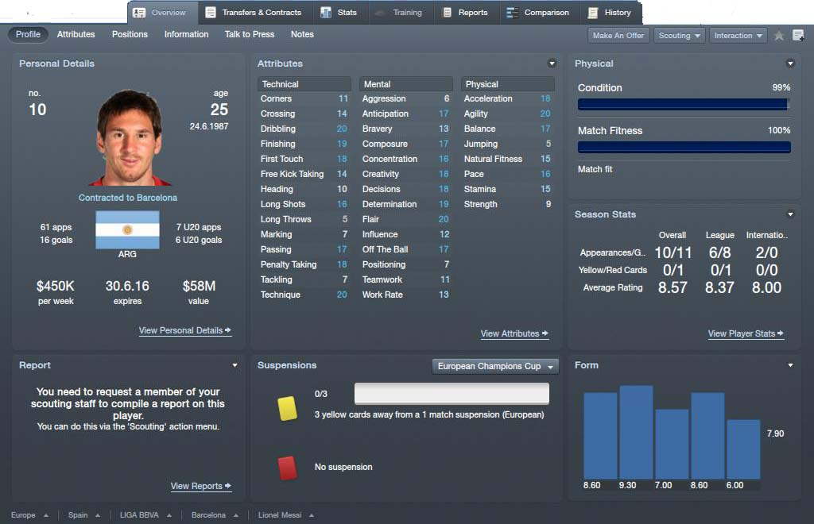

Fail of the Day
Ahhh, the humble basketball fail, a joy to behold for everyone, except the player who fails. We’ve compiled these 24 howlers which will either make you laugh or cry they are so bad.

See More Players
Player Stats
Lionel Messi: Player od the day
El delantero del Barcelona, Leo Messi, posa en la portada de la revista 'El Gráfico' del mes de marzo. La publicación argentina define al astro azulgrana como "Señor Fútbol" y recoge varias reflexiones suyas sobre su futuro cercano, su relación con Cristiano Ronaldo y todo lo que ha recorrido en sus más de diez años como deportista profesional. Está cerca de superar a Batistuta como máximo goleador de la selección argentina, pero le trae sin cuidado: "Los récords no te hacen ganar títulos".La relación del Tridente. "Tenemos una muy buena relación dentro y fuera del campo. Nos llevamos muy bien. Tratamos de trabajar para el equipo y está bueno que todos nos sintamos importantes. El ser latinos quizás te da más acercamiento, aunque somos profesionales, cuando cada uno representa a su selección cambian los papeles, pero no hay rivalidad o enfrentamiento".
Lionel Andrés Messi Cuccittini (Rosario, 24 de junio de 1987), conocido como Leo Messi,13 es un futbolista argentino11 que juega como delantero en el Fútbol Club Barcelona y en la selección argentina. Considerado con frecuencia el mejor jugador del mundo y calificado en el ámbito deportivo como el más grande de todos los tiempos,14 15 16 17 18 19 Messi es el único futbolista en la historia que ha ganado cinco veces el FIFA Balón de Oro –cuatro de ellos en forma consecutiva– y el primero en recibir tres Botas de Oro. Con el Barcelona ha ganado siete títulos de La Liga y cuatro de la Liga de Campeones de la UEFA, así como tres títulos de la Copa del Rey. Goleador prolífico, ostenta los récords por más goles en la historia de La Liga (302), en una temporada de La Liga (50), en un año calendario (91), en un partido de la Liga de Campeones (cinco) y en más temporadas de la Liga de Campeones (cinco). Nacido y criado en la ciudad de Rosario, a los 13 años se radicó en España, donde el Barcelona accedió a pagar el tratamiento de la enfermedad hormonal que le habían diagnosticado de niño. Después de una rápida progresión a través de la Academia juvenil del Barcelona, hizo su debut en competición a los 17 años, en octubre de 2004. A pesar de ser propenso a lesiones en los inicios de su carrera, en los tres años subsiguientes se estableció como jugador fundamental para el club y, en 2007, fue finalista del Balón de Oro y del Jugador Mundial de la FIFA del año, logro que repitió en 2008. Su primera campaña ininterrumpida fue la temporada 2008–09, durante la que ayudó al Barcelona a alcanzar el primer triplete del fútbol español. A los 22 años, ganó el Balón de Oro y el premio al Jugador Mundial de la FIFA del año por márgenes récord de votación.20 21 22 23 24